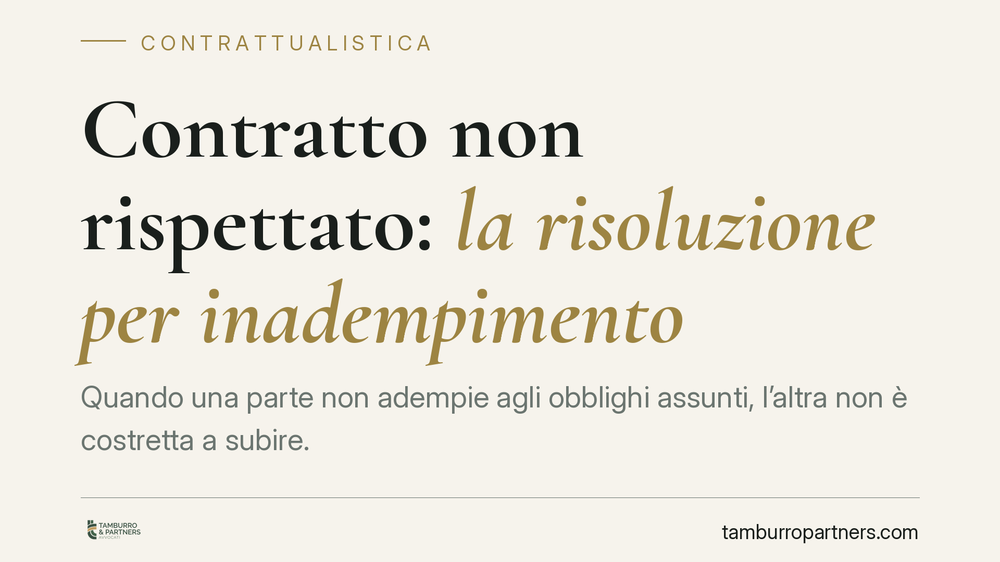

Contratto non rispettato: la risoluzione per inadempimento
Quando una parte non adempie agli obblighi assunti, l'altra non è costretta a subire. Il Codice civile prevede la risoluzione del contratto per inadempimento, uno strumento che libera il creditore e apre la strada al risarcimento. Vediamo quando è possibile invocarla, con quali modalità e con quali effetti concreti.

Il caso tipico
Mario si impegna a consegnare a Giovanni una fornitura entro una certa data. Il termine passa e la merce non arriva, oppure arriva difettosa. Giovanni si trova con un contratto sulla carta ma senza la prestazione attesa. La domanda è semplice: può liberarsi dal vincolo e pretendere i danni?
La risposta la offre l'istituto della risoluzione per inadempimento, cioè lo scioglimento del contratto causato dalla mancata o inesatta esecuzione degli obblighi da parte di uno dei contraenti.
Inquadramento normativo
Il riferimento cardine è l'art. 1453 del Codice civile: nei contratti con prestazioni corrispettive (dove ciascuna parte deve qualcosa all'altra), se un contraente non adempie, l'altro può scegliere se chiedere l'adempimento oppure la risoluzione, salvo in ogni caso il risarcimento del danno. La scelta non è definitiva a senso unico: chi ha chiesto l'adempimento può poi domandare la risoluzione, ma non viceversa.
Non ogni mancanza giustifica lo scioglimento. L'art. 1455 c.c. richiede che l'inadempimento non sia di "scarsa importanza" avuto riguardo all'interesse dell'altra parte. La Cassazione (sent. 32126/2019) ha ribadito che la gravità va valutata in concreto, considerando l'incidenza del ritardo o del difetto sull'equilibrio del contratto, non solo l'entità economica.
Quanto agli effetti, l'art. 1458 c.c. stabilisce che la risoluzione ha efficacia retroattiva tra le parti: si torna, per quanto possibile, alla situazione anteriore, con obbligo di restituire quanto ricevuto. Nei contratti a esecuzione continuata o periodica (come una locazione o una somministrazione), invece, la risoluzione non tocca le prestazioni già eseguite.
Le tre vie per risolvere
Oltre alla risoluzione giudiziale ottenuta con sentenza, la legge prevede meccanismi più rapidi.
La diffida ad adempiere (art. 1454 c.c.) consente al creditore di intimare per iscritto l'adempimento entro un termine congruo, non inferiore di regola a quindici giorni, avvertendo che, decorso inutilmente, il contratto si intenderà risolto di diritto. Non serve il giudice per lo scioglimento.
La clausola risolutiva espressa (art. 1456 c.c.) è la pattuizione con cui le parti indicano fin dall'inizio quali specifici inadempimenti provocano la risoluzione automatica. La Cassazione (sent. 15363/2010) ha precisato che deve riferirsi a obblighi determinati, non a un generico richiamo agli obblighi contrattuali.
Infine, il termine essenziale (art. 1457 c.c.): quando la data di adempimento è fondamentale per il creditore, il suo superamento produce la risoluzione, salvo che il creditore dichiari entro tre giorni di volere ancora la prestazione.
Va ricordato anche l'art. 1459 c.c.: nei contratti plurilaterali, l'inadempimento di una parte non travolge l'intero contratto, salvo che la prestazione mancata risulti essenziale.
Cosa cambia per chi subisce l'inadempimento
La scelta dello strumento incide sui tempi e sui rischi. La via giudiziale è più lenta ma consente al giudice di accertare la gravità dell'inadempimento. Diffida e clausola risolutiva sono più veloci, ma richiedono precisione: un termine troppo breve nella diffida o una clausola generica possono rendere inefficace la risoluzione.
La Cassazione (sent. 767/2016 e 26907/2014) ha inoltre chiarito che chi invoca la risoluzione deve a sua volta avere adempiuto o essere pronto ad adempiere: l'eccezione di inadempimento reciproco può paralizzare la domanda.
Non va trascurato il risarcimento: la risoluzione non esclude il danno, che comprende sia la perdita subita sia il mancato guadagno, purché provati.
Cosa fare in concreto
- Documenta l'inadempimento: raccogli comunicazioni, solleciti, verbali di consegna e ogni prova della prestazione mancata o difettosa.
- Verifica la gravità: valuta se il difetto incide realmente sul tuo interesse; un inadempimento minore non giustifica la risoluzione.
- Scegli lo strumento adatto: controlla se il contratto contiene una clausola risolutiva espressa o un termine essenziale prima di attivare una diffida.
- Redigi la diffida con precisione: indica l'obbligo, concedi un termine congruo e inserisci l'avvertimento espresso di risoluzione.
- Assicurati di essere in regola: prima di agire, verifica di aver adempiuto le tue obbligazioni, per non esporti all'eccezione di inadempimento.
Consigliamo di far valutare la strategia prima di inviare comunicazioni: un passo formale errato può compromettere l'intera posizione.
Disclaimer
Contributo informativo a cura di Tamburro & Partners - Avv. Giuseppe Tamburro. Non costituisce parere legale.
Ogni contratto ha il suo equilibrio.
Se vuoi una revisione delle clausole o una redazione su misura, scrivi allo studio. Ti rispondiamo entro un giorno lavorativo.